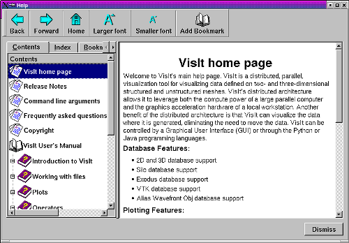

VisIt's Help Window, shown in figure, displays all of VisIt's online help content. You can open the Help Window by choosing the Help option from the Main Window's Help menu. The Help Window has a toolbar along the top of the window while the rest of the window is divided vertically into two main areas. The left side of the window is used to select online help pages and it is further divided with tabs for help contents, help index, and bookmarks. The right side of the window displays the content for the online help pages.
|  |
| Figure 2 |